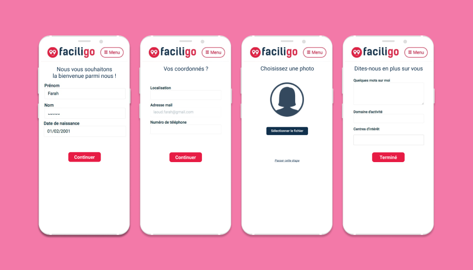
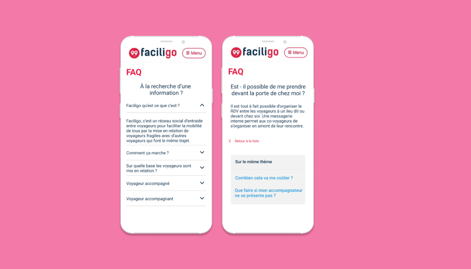
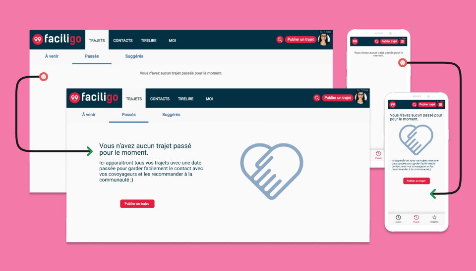

Développeuse Front-End (Ruby on Rails) et UX Designer, aux côtés d'un Lead Dev et d'un développeur Back-End, en méthodologie agile.
Refonte de l'espace membre, de la messagerie et du parcours de première connexion. Premières explorations sur l'accessibilité et la gamification.

Parcours de première connexion / onboarding pensé pour guider l'utilisateur pas à pas.

FAQ & accessibilité / conception d'un espace d'aide clair, dans une logique d'accessibilité.

Espace membre / refonte du tableau de bord et de la messagerie, développée en Ruby on Rails.
Ce que j'ai retenu de cet environnement start-up : la méthode. Identifier un problème, tester des solutions, valider des hypothèses, puis les mettre en œuvre.